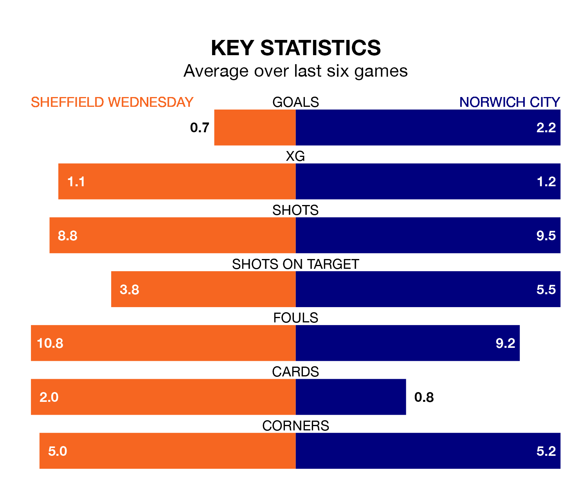

Struggling Sheffield Wednesday face Norwich City at Hillsborough on Tuesday looking to build on a win in their last league outing.
After securing all three points with a 2-0 victory over Queens Park Rangers on Saturday, the Owls sit 23rd in EFL Championship.
They travel to play a Norwich side sixth in the standings, who also won their last match, 1-0 against Ipswich Town.
With 33 goals in 41 games so far this season, Wednesday are the league's second-lowest scorers with 0.8 goals per game. And they are conceding more than average, letting in 64 goals at a rate of 1.6 per game.
Norwich, meanwhile, are above average scorers, with 1.8 goals per game, compared to a league average of 1.3. They have conceded 1.4 goals per game.
In the last 10 years, Wednesday and Norwich have played each other on 11 occasions. Wednesday won two of them, Norwich six, and they drew three times.
On average, the Owls scored 1.5 goals and the Canaries 1.8 in those matches.
Their last meeting was on December 13, when Norwich won 3-1 at home.
In Joshua Sargent, City have one of the league's sharpest shooters so far this season. He has notched 14 goals in 21 appearances, to sit seventh in the scoring charts.
His goal rate of one every 104 minutes is much quicker than that of Anthony Musaba, the Owls's top scorer with a goal every 387 minutes, and a total of six goals in 38 games.
The hosts are in mixed form in EFL Championship, with two wins and a draw from their last six games.
With four wins and two losses over that period, the Canaries' form is better – they have taken 12 points from 18, compared to Wednesday's seven.
Tuesday's match will be refereed by Chris Kavanagh, who has taken charge of two EFL Championship games so far this season, issuing no red cards and booking five players. He has not awarded any penalties.
He is yet to oversee a match featuring either Wednesday or Norwich this season.
Updated: 11:20 (UTC), 09/04/24